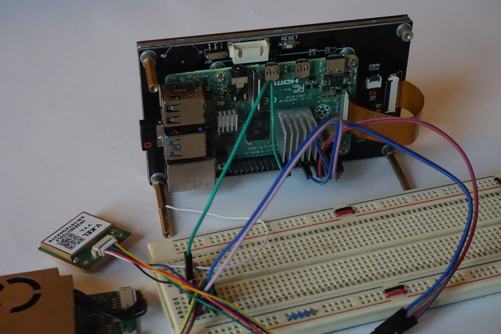
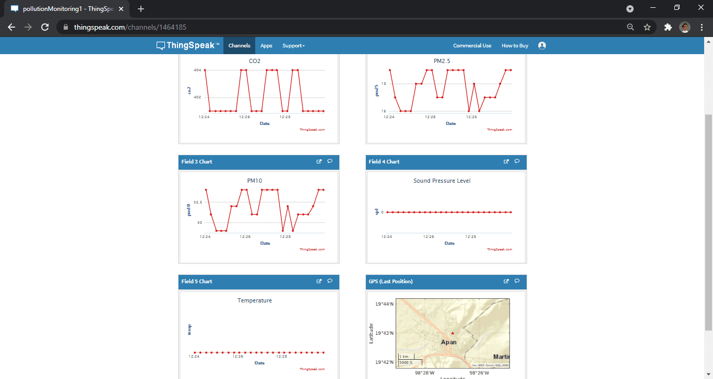
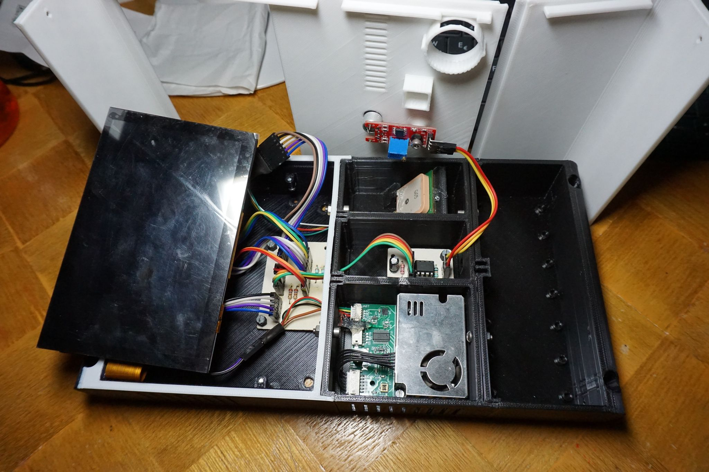
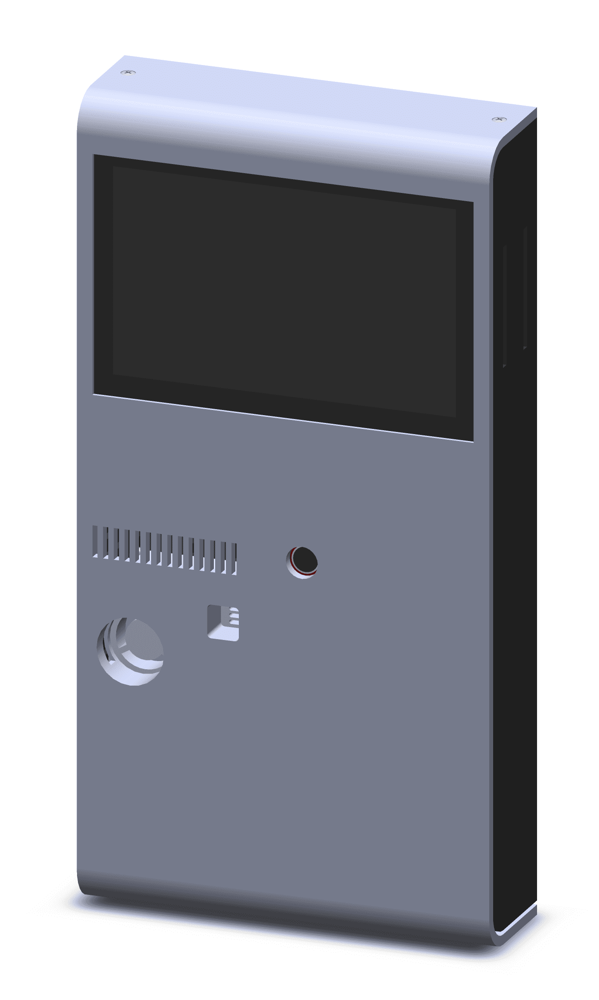
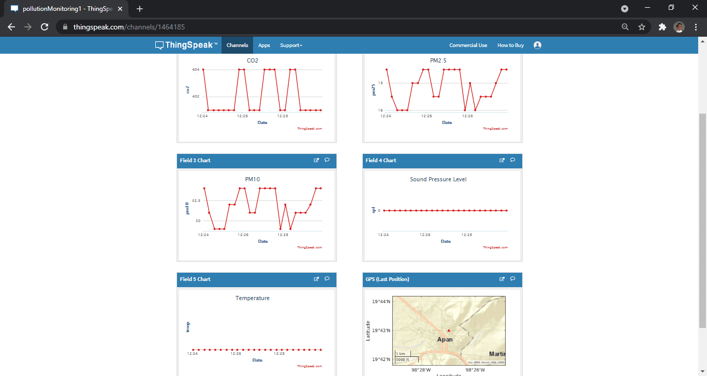
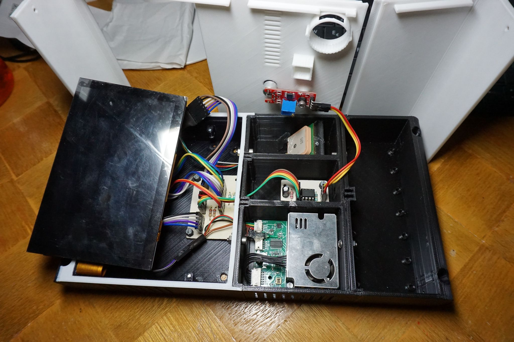
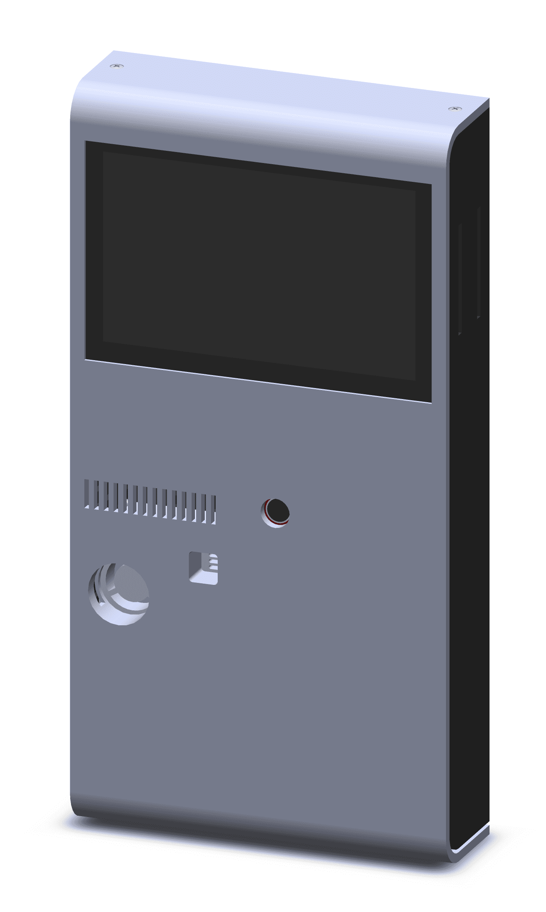
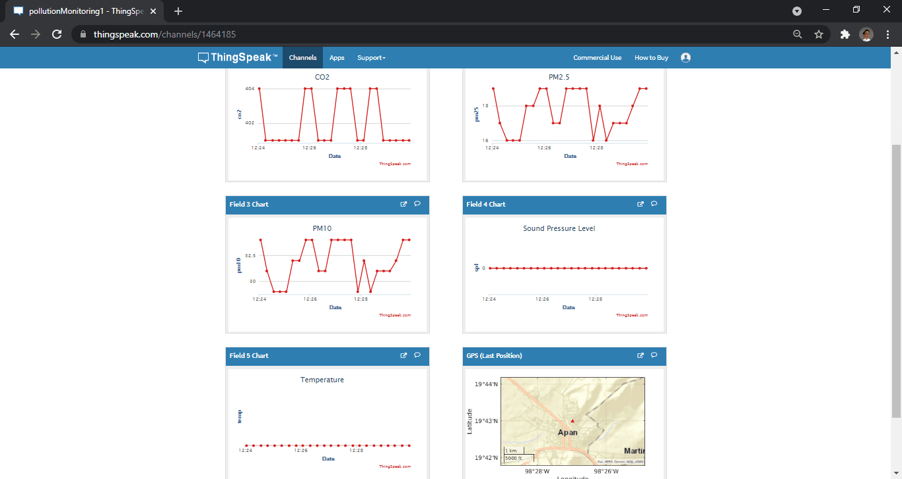
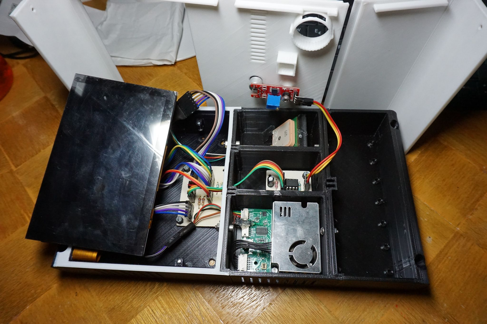
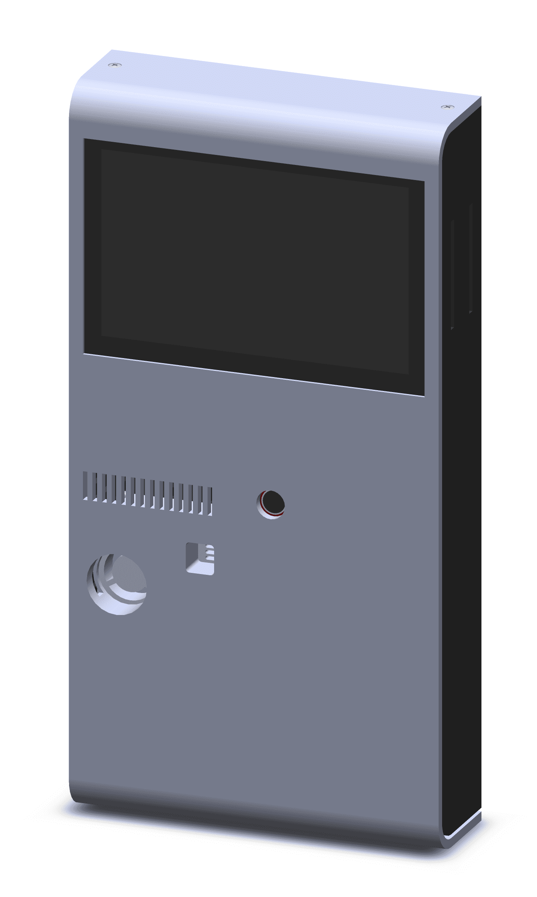

MEDIA

 





POLLUTION MONITOR
ABOUT THE PROJECT
This is my Degree Final Project and I'm currently working in it with a team. Consist in a device able to measure some kinds of atmospheric pollution such a Particulate Matter and Carbon dioxide, get the position through the GPS and send the data to Cloud Storage. We are using a Raspberry Pi to get, process and send data to internet, applying IoT principles
MEDIA


